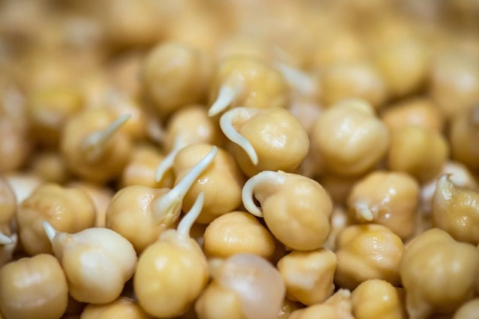

Chickpeas / Garbanzo Bean Sprouts
 Garbanzo beans, otherwise known as chickpeas, Bengal grams, and Egyptian peas, are a beige-colored legume. They have a delicious nutlike taste and a texture that is buttery, yet somewhat starchy and pasty… with a unique characteristic of earthiness to them.
Garbanzo beans, otherwise known as chickpeas, Bengal grams, and Egyptian peas, are a beige-colored legume. They have a delicious nutlike taste and a texture that is buttery, yet somewhat starchy and pasty… with a unique characteristic of earthiness to them.
In the nutrition department, they are rich in B vitamins, particularly folate, thiamin, and B6. They’re also a good source of minerals like iron, magnesium, phosphorus, and manganese.
Did you know that chickpeas have a “shell”? It’s not noticeable as it is semi-transparent and requires some effort in removing. Many people recommend removing the papery skin that envelops the chickpea because it can make hummus or any other pate’ type form of chickpea to be gritty. Others disagree. What’s your experience?
But here’s the kicker…in the outer “shell” of the chickpea is a concentration of rich antioxidants such as quercetin, kaempferol, and myricetin.
If you want to boost these antioxidants, select darker colored chickpeas… they have a thicker coat (shell). The chickpea itself is high in the antioxidant compounds caffeic, vanillic, chlorogenic and ferulic acid, which are known to help combat free radicals and reduce inflammation. For me, the shell stays so I can obtain as much of the goodness that they have to offer.
Are you a Sproutarian?
Many people believe that sprouting is the healthiest form of foods out there. Beans can be difficult to digest, but sprouting them can help to improve digestion. If your digestion is weak, I would even go as far as suggesting to cook the chickpeas after sprouting them. Yes, I know, this site features raw recipes… in the end, it’s all about what works best for you body, not whether something is labeled raw or cooked.
So whether you continue to just sprout the chickpeas or cook them, the soaking process is vital. Through this process, there is a reduction of oligosaccharides, which should result in fewer problems with flatulence and bloating. Another reason for soaking is that some of the phytase enzymes in the chickpeas may become activated and help to transform some of the phytic acid found in the beans. When phytic acid gets converted into other substances, it is less likely to bind together with other nutrients and reduce their absorption. (1) I read a pretty darn good article regarding the natural toxins and sprouting. If interested, visit www.sproutnet.com.

Cooking raw sprouted chickpeas may seem counterintuitive, but again, you are preparing foods in ways that work best for you today. Let how you feel when you eat beans be your ultimate authority. They say that you can still get some of the benefits from the sprouting process, plus a really short cooking time – like ten minutes instead of an hour and a half. Raw sprouts are usually sweeter and once cooked they are meatier. Blessings to you, amie sue
Ingredients:
yield approximately 2:1
- 1 cup dried chickpeas
- Water
- 1 tsp Himalayan pink salt
Preparation:
Soaking:
- Before washing the chickpeas, spread them out on a paper towel to check for small stones, debris or damaged beans. After this process, place them in a strainer and rinse them thoroughly under cool running water.
- Place in a quart-size jar or other sprouting container.
- Add 2-3 times as much cool (60-70 degree) water and salt. Stir the chickpeas to assure even water contact for all.
- Cover the mouth of the jar or bowl with a piece breathable fabric, such as cheesecloth.
- Soak for 8 – 24 hours.
Sprouting process:
- Skim off any skins or chickpeas that have floated to the surface. Toss them.
- Drain and rinse the beans thoroughly.
- You can sprout in a jar or even in a mesh strainer that is sitting over a bowl. (my favorite method since it gives more air circulation)
- Set your sprouting container anywhere out of direct sunlight and at room temperature (70° is optimal).
- If using a jar, invert the jar over a bowl at an angle so that the beans will drain and still allow air to circulate.
- Repeat rinsing and draining 2-3 times per day until sprouts are the desired length, usually 3-4 days.
- Drain beans for several hours before cooking or transferring to a covered container. Store sprouts in the refrigerator for up to 1 week.
- Food safety. Personally, I’ve never had any issues with mold or discoloration of my beans during sprouting, but if you ever feel that something is questionable or smells or looks off, please trust your gut and don’t eat it.
Gentle Cooking process: optional
- In a saucepan, add three cups of fresh water or for each cup of dried garbanzo beans. The liquid should be about one to two inches above the top of the legumes.
- Bring them to a boil, and then reduce the heat to simmer, partially covering the pot.
- Cook for roughly 10 minutes or until soft but not mushy.
- Add a little apple cider vinegar to the beans during the cooking process to aid in digestion.
- Store in fridge for up to a week.
© AmieSue.com